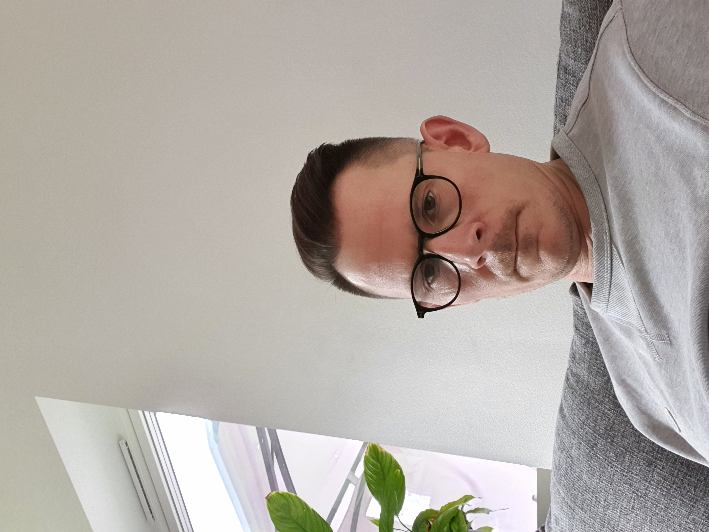

Mattias Hjelte

Summary
I am a reliable, dedicated induvidual with high working moral. I have long experience in logistics and warehouse management.
Education
- Noretskolan. Elementary school. 1982-1991.
- Various courses. Foresty. General high school courses.
- Mora Folkhögskola. High school general program. 1997-1999.
- St: Mikaelsskolan. Cookicng school. 2000-2001.
- Martin & Servera. Leadership program.
Work Experience
- Various jobs. 1993-1998.
- Tourism guide. Summer job for three seasons. 1999-2001.
- Chef at Wibe. Extra 2001-2002
- Warehouse and logistics at Dahlbergs Gross. 2002-2011.
- Warehose and logistics at Martin & Servera. 2012-2013.
- Warehouse manager att Martin & Servera. 2013-
Skills
- Leadership
- Warehouse management
- Project management
- MS Office
- LEAN
- HTML
Awards and Certifications
Others
Contact
Hobbies